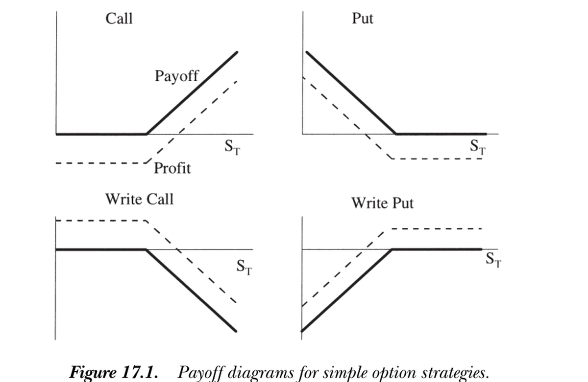
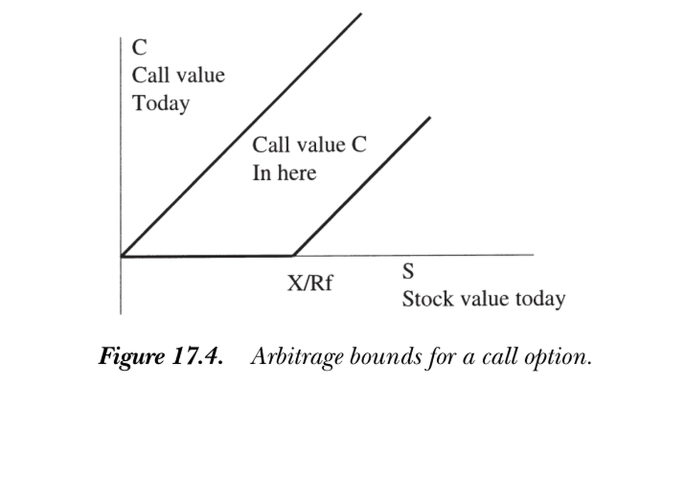

17. Option Pricing
17. Option Pricing
本章导读 Part III（债券与期权）开篇。期权定价采取极端相对定价视角：以股票价格与利率为给定，求期权价值。统一框架仍是 \(C=\mathbb E(mx)\)，\(x\) 是期权到期支付。本章（Cochrane 第 17 章）§17.1 背景：看涨/看跌定义与支付图、波动率策略；仅凭一价定律得看跌看涨平价 \(P=C-S+X/R^f\)，加无套利（\(m>0\)）得套利界与"无股利美式看涨期权绝不提前行权"。§17.2 Black-Scholes：放开动态交易（贴现因子须在每一时点都给股票与债券定价），就能精确钉死期权价值——用贴现因子方法（而非传统复制组合）给出两条等价路径：① 前向解贴现因子再积分 \(C_0=\mathbb E_0(\Lambda_T/\Lambda_0\cdot x^C_T)\)；② 倒向解 BS 偏微分方程。Part III 的关键新意：把单期/瞬时表述链接成长期价格（链贴现因子或链价格）。
17. Option Pricing
Overview Part III (Bonds and Options) opens here. Option pricing adopts an extremely relative view: taking the stock price and an interest rate as given, find the option's value. The framework is still \(C=\mathbb E(mx)\) with \(x\) the option's payoff at expiration. This chapter (Cochrane Ch 17): §17.1 background — call/put definitions and payoff diagrams, volatility strategies; the law of one price alone gives put-call parity \(P=C-S+X/R^f\), and adding no-arbitrage (\(m>0\)) gives arbitrage bounds and "never exercise an American call on a non-dividend stock early." §17.2 Black-Scholes: opening up dynamic trading (the discount factor must price the stock and bond at every date) pins down the option value exactly — via the discount-factor approach (rather than the traditional replicating portfolio) in two equivalent paths: ① solve the discount factor forward then integrate \(C_0=\mathbb E_0(\Lambda_T/\Lambda_0\cdot x^C_T)\); ② solve the BS partial differential equation backward. The key novelty of Part III: chaining one-period/instantaneous statements into long-lived prices (chain discount factors or chain prices).
17.1 背景 / Background
定义与支付。 看涨期权给你在到期日 \(T\) 以执行价 \(X\) 买入股票的权利（非义务），看跌期权给你卖出的权利。欧式只能在到期日行权，美式可提前。记今日价 \(C,S\)、到期价 \(C_T,S_T\)。支付为
17.1 Background
Definitions and payoffs. A call option gives the right (not the obligation) to buy the stock at the strike price \(X\) on expiration \(T\); a put gives the right to sell. European options exercise only at \(T\), American anytime before. Write today's prices \(C,S\) and expiration prices \(C_T,S_T\). The payoffs are
$$C_T=\max(S_T-X,\,0),\qquad P_T=\max(X-S_T,\,0).$$
下图画出买入看涨/看跌及其对应空头（写出 write）的支付，并区分支付与利润（支付减期初成本）。期权有趣的特征：① 看涨给你巨大的正 β（平价期权约 10，相当于借 10 美元投 11 美元于股票），但损失限于期初权利金——故极便于交易与对冲；② 期权能塑造收益分布：买远价外看跌 = "灾难保险"（切掉左尾），写远价外看跌 = 向市场卖灾难保险（高概率小赚、小概率巨亏，分布极度非正态，对只看统计的基金经理很诱人）。
The figure below shows the payoffs of buying calls/puts and the corresponding short positions (writing), distinguishing payoff from profit (payoff minus the up-front cost). Interesting features: ① a call gives a huge positive β (≈10 for at-the-money, like borrowing 10 dollars to invest 11 in the stock), but losses are limited to the premium paid up front — very useful for trading and hedging; ② options shape the return distribution: buying a far out-of-the-money put = "catastrophe insurance" (cutting off the left tail), writing one = selling catastrophe insurance to the market (high probability of a small gain, small probability of a huge loss, extremely non-normal — tempting to a manager judged only on return statistics).

图 17.1 简单期权策略的支付图。实线为到期支付，虚线为利润（支付减成本）。上排为买入看涨/看跌，下排为写出看涨/看跌。
Figure 17.1 Payoff diagrams for simple option strategies. Solid lines are payoffs at expiration, dashed lines profit (payoff minus cost). Top: buying a call/put; bottom: writing a call/put.
策略。 期权组合称策略。跨式 (straddle)（同执行价的一看涨加一看跌）在股价大涨大跌时赚、不动时亏——是对波动率的下注（故波动率是期权价格的核心参数：波动越高，看涨看跌都越贵）。更一般地，组合不同执行价的期权可买卖收益分布的任意片段：一整套各执行价的看涨期权等价于完全市场（能构造任意 \(f(S_T)\)）。
一价定律 ⟹ 看跌看涨平价。 考虑两策略：① 持看涨、写看跌（同执行价）；② 持股、承诺付 \(X\)。二者支付相同：\(P_T=C_T-S_T+X\)。对两边取 \(\mathbb E(m\cdot)\)（任意 \(m\)）：
Strategies. Portfolios of options are strategies. A straddle (a call plus a put at the same strike) pays off when the stock moves a lot up or down and loses when it doesn't — a bet on volatility (so volatility is the central parameter of option prices: higher volatility raises both call and put prices). More generally, combining options of various strikes lets you buy and sell any piece of the return distribution: a complete set of calls at every strike is equivalent to complete markets (you can form any \(f(S_T)\)).
Law of one price ⟹ put-call parity. Consider two strategies: ① hold a call, write a put (same strike); ② hold the stock, promise to pay \(X\). Their payoffs are equal: \(P_T=C_T-S_T+X\). Applying \(\mathbb E(m\cdot)\) to both sides (any \(m\)):
$$P=C-S+X/R^f.$$
套利界与提前行权 / Arbitrage bounds and early exercise 加上无套利（\(m>0\)）即得看涨期权价的套利界（无需知道看跌价）：① \(C_T>0\Rightarrow C>0\)；② \(C_T\ge S_T-X\Rightarrow C\ge S-X/R^f\)；③ \(C_T\le S_T\Rightarrow C\le S\)。但这些界太宽、实用价值有限（需对 \(m\) 知道更多）。构造性技巧：求 \(\max/\min_m C_t=\mathbb E_t(mx^C_T)\) s.t. \(m>0,\ S_t=\mathbb E_t(mS_T),\ 1=\mathbb E_t(mR^f)\)——这是个线性规划，能在复杂情形下保证找到所有（最紧的）套利界，而无需聪明地猜占优组合（Ritchken 1985）。由套利还可证：无股利股票的美式看涨期权绝不应提前行权——\(C\ge S-X/R^f\ge S-X\)（\(R^f>1\)），而 \(S-X\) 正是提前行权所得；提前行权既损失延迟付 \(X\) 的好处、又丢掉期权时间价值。Adding no-arbitrage (\(m>0\)) gives arbitrage bounds on the call price (without knowing the put price): ① \(C_T>0\Rightarrow C>0\); ② \(C_T\ge S_T-X\Rightarrow C\ge S-X/R^f\); ③ \(C_T\le S_T\Rightarrow C\le S\). But these bounds are too wide to be of much use (we need to know more about \(m\)). A constructive trick: solve \(\max/\min_m C_t=\mathbb E_t(mx^C_T)\) s.t. \(m>0,\ S_t=\mathbb E_t(mS_T),\ 1=\mathbb E_t(mR^f)\) — a linear program that is guaranteed to find all (the tightest) arbitrage bounds in complex situations, without cleverly guessing dominating portfolios (Ritchken 1985). No-arbitrage also proves: never exercise an American call on a non-dividend stock early — \(C\ge S-X/R^f\ge S-X\) (since \(R^f>1\)), and \(S-X\) is what early exercise yields; exercising early loses both the benefit of delaying \(X\) and the option's time value.
17.2 Black-Scholes 公式 / The Black-Scholes Formula
一期分析只给出套利界；放开中间时点交易（真正的多期动态定价）才能精确定价。传统做法靠显式构造复制组合（每时点用股票与债券复制期权瞬时支付）；这里改用贴现因子方法：每时点构造一个给股票与债券定价的贴现因子、用它给期权定价（一价定律 = 贴现因子存在，二者等价）。设股票与利率服从
17.2 The Black-Scholes Formula
One-period analysis gives only arbitrage bounds; opening up intermediate trading (genuine multiperiod dynamic pricing) pins down the price exactly. The standard approach explicitly constructs a replicating portfolio (at each instant a stock-bond portfolio replicating the option's instantaneous payoff); instead we use the discount-factor approach: at each instant construct a discount factor pricing the stock and bond, and use it to price the option (the law of one price = existence of a discount factor, equivalent). Let the stock and interest rate follow
$$\frac{dS}{S}=\mu\,dt+\sigma\,dz,\qquad r\,dt\ \text{(money market)}.$$
所有给股票与债券定价的贴现因子形如 \(\frac{d\Lambda}{\Lambda}=-r\,dt-\frac{\mu-r}{\sigma}dz-\sigma_w\,dw\)（\(\mathbb E(dw\,dz)=0\)）。关键：\(\sigma_w\,dw\) 的选择对期权价毫无影响——每个给股票与利率定价的贴现因子都给出相同的期权价，故期权仅凭一价定律即被定价。两条路径：
All discount factors pricing the stock and bond have the form \(\frac{d\Lambda}{\Lambda}=-r\,dt-\frac{\mu-r}{\sigma}dz-\sigma_w\,dw\) (with \(\mathbb E(dw\,dz)=0\)). The key point: the choice of \(\sigma_w\,dw\) has no effect on the option price — every discount factor pricing the stock and interest rate gives the same option price, so the option is priced by the law of one price alone. Two paths:
方法一：用贴现因子直接积分。 前向解随机微分方程得 \(\ln S_T,\ln\Lambda_T\) 的（对数正态）联合分布：\(\ln S_T=\ln S_0+(\mu-\tfrac{\sigma^2}2)T+\sigma\sqrt T\,\varepsilon\)，\(\ln\Lambda_T\) 类似，\(\varepsilon\sim N(0,1)\)。则 \(C_0=\int_{S_T\ge X}\frac{\Lambda_T}{\Lambda_0}(S_T-X)\,df(\varepsilon)\)。把两个 \(\varepsilon\) 的指数项合并、配方成正态、用累积正态 \(N(\cdot)\) 表达定积分，得 Black-Scholes 公式。
方法二：倒向解 BS 偏微分方程。 猜 \(C=C(S,t)\)，用 Ito 引理得 \(dC\)，代入基本定价方程 \(0=\mathbb E_t[d(\Lambda C)]=C\,\mathbb E_t d\Lambda+\mathbb E_t dC+\mathbb E_t d\Lambda\,dC\)，用 \(\mathbb E_t(d\Lambda/\Lambda)=-r\,dt\) 并约去 \(\Lambda\,dt\)，得 Black-Scholes 偏微分方程：
Method 1: integrate using the discount factor. Solving the SDEs forward gives the (lognormal) joint distribution of \(\ln S_T,\ln\Lambda_T\): \(\ln S_T=\ln S_0+(\mu-\tfrac{\sigma^2}2)T+\sigma\sqrt T\,\varepsilon\), similarly for \(\ln\Lambda_T\), with \(\varepsilon\sim N(0,1)\). Then \(C_0=\int_{S_T\ge X}\frac{\Lambda_T}{\Lambda_0}(S_T-X)\,df(\varepsilon)\). Merging the two exponentials in \(\varepsilon\), completing the square into normals, and expressing the definite integrals via the cumulative normal \(N(\cdot)\) yields the Black-Scholes formula.
Method 2: solve the BS PDE backward. Guess \(C=C(S,t)\), use Ito's lemma for \(dC\), substitute into the basic pricing equation \(0=\mathbb E_t[d(\Lambda C)]=C\,\mathbb E_t d\Lambda+\mathbb E_t dC+\mathbb E_t d\Lambda\,dC\), use \(\mathbb E_t(d\Lambda/\Lambda)=-r\,dt\) and cancel \(\Lambda\,dt\), giving the Black-Scholes partial differential equation:
$$0=-rC+C_t+SrC_S+\tfrac12C_{SS}S^2\sigma^2.\tag{17.8}$$
注意漂移 \(\mu\) 消失了——只剩无风险利率 \(r\)，这正是"风险中性定价"的体现。配上边界条件 \(C(S_T,T)=\max(S_T-X,0)\) 倒向求解（概念与数值上都不难：在 \(S\) 网格上存住 \(C\)、求 \(S\) 的一二阶导、得右端、即可前推一瞬之前的价），其解析解正是 Black-Scholes 公式：
Note the drift \(\mu\) has vanished — only the risk-free rate \(r\) remains, the hallmark of "risk-neutral pricing." Solved backward with the boundary condition \(C(S_T,T)=\max(S_T-X,0)\) (easy conceptually and numerically: store \(C\) on a grid of \(S\), take first and second \(S\)-derivatives, form the right-hand side, and step one instant earlier), its analytic solution is the Black-Scholes formula:
$$C_0=S_0\,N(d_1)-Xe^{-rT}N(d_2),\qquad d_1=\frac{\ln(S_0/X)+(r+\sigma^2/2)T}{\sigma\sqrt T},\quad d_2=d_1-\sigma\sqrt T.\tag{17.7}$$
三个要点 / Three takeaways ① 每一瞬都是平凡的一价定律，但把它们沿时间链接起来并不平凡——这正是连续时间模型的工程复杂性所在。② BS 公式不依赖 \(\mu\)（股票期望收益）、也不依赖贴现因子里 \(\sigma_w\,dw\) 的选择，仅凭股价、利率、波动率与一价定律即得。③ 两条路径等价：前向解贴现因子积分（方法一）与倒向解 PDE（方法二）由 Feynman-Kac 联系起来——PDE (17.8) 的解可表示为方法一中那种积分。Black-Scholes 当年用复杂的 Fourier 变换解出，而 guess-and-check 即可验证 (17.7) 满足 (17.8)。① Each instant is trivial law of one price, but chaining them over time is not — this is the engineering complexity of continuous-time models. ② The BS formula does not depend on \(\mu\) (the stock's expected return) or on the choice of \(\sigma_w\,dw\) in the discount factor — it follows from the stock price, interest rate, volatility, and the law of one price alone. ③ The two paths are equivalent: solving the discount factor forward and integrating (Method 1) and solving the PDE backward (Method 2) are linked by Feynman-Kac — the solution of PDE (17.8) can be represented as the integral of Method 1. Black and Scholes originally solved it with a complicated Fourier transform, but guess-and-check verifies that (17.7) satisfies (17.8).

图 17.4 看涨期权的套利界。今日看涨价 \(C\) 必落在两线之间：上界 \(C\le S\)，下界 \(C\ge S-X/R^f\)（横轴为今日股价 \(S\)，下界与横轴交于 \(X/R^f\)）。
Figure 17.4 Arbitrage bounds for a call option. Today's call price \(C\) must lie between the two lines: upper bound \(C\le S\), lower bound \(C\ge S-X/R^f\) (horizontal axis is today's stock price \(S\); the lower bound meets the axis at \(X/R^f\)).
小结 / Summary
期权定价是相对定价的典范：以股票与利率为给定求期权价。一期分析（一价定律 + 无套利）给出看跌看涨平价 \(P=C-S+X/R^f\) 与套利界，但界太宽。放开动态交易后，每一瞬都能构造一个给股票与债券定价的贴现因子，沿时间链接即精确钉死期权价值——漂移 \(\mu\) 消失，只剩 \(r\)，得 Black-Scholes 公式 \(C_0=S_0N(d_1)-Xe^{-rT}N(d_2)\)。贴现因子方法（前向积分或倒向解 PDE）与传统复制组合殊途同归，且揭示出"仅凭一价定律即可定价"的本质。下一章讨论无法完美复制时的期权定价（套利界 + good-deal 界）。
Summary
Option pricing is the exemplar of relative pricing: take the stock and interest rate as given and find the option's value. One-period analysis (law of one price + no-arbitrage) gives put-call parity \(P=C-S+X/R^f\) and arbitrage bounds, but the bounds are wide. Opening up dynamic trading, at each instant one can construct a discount factor pricing the stock and bond, and chaining over time pins down the option value exactly — the drift \(\mu\) vanishes, leaving only \(r\) — yielding the Black-Scholes formula \(C_0=S_0N(d_1)-Xe^{-rT}N(d_2)\). The discount-factor approach (forward integration or backward PDE) converges with the traditional replicating portfolio and reveals the essence that "pricing follows from the law of one price alone." The next chapter treats option pricing without perfect replication (arbitrage bounds + good-deal bounds).
习题 / Problems
- 我们证明了无股利时美式看涨期权绝不应提前行权。美式看跌期权也如此吗？还是存在提前行权最优的情形？
- 重走 Black-Scholes 公式的积分推导，证明 \(dw\)（即 \(\sigma_w\,dw\) 项）不影响最终结果。
Problems
- We showed an American call on a non-dividend stock should never be exercised early. Is the same true for American puts, or are there circumstances in which early exercise is optimal?
- Retrace the integral derivation of the Black-Scholes formula and show that the \(dw\) (i.e. the \(\sigma_w\,dw\) term) does not affect the final result.